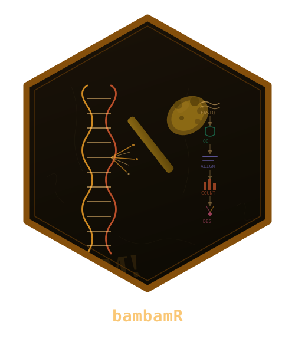

bambamR: End-to-End RNA-Seq Processing from FASTQ to Publication-Ready Plots
Source:R/utils.R
bambamR-package.RdA streamlined toolkit for RNA-seq analysis covering FASTQ/BAM import, quality control, alignment, read counting, normalization, differential expression analysis, and publication-ready visualizations including onco plots, volcano plots, heatmaps, and PCA. Operates in minimal mode with CRAN-only dependencies or in full mode when Bioconductor packages are available.
Author
Maintainer: Raban Heller raban.heller@uni-ulm.de (ORCID)
Authors:
Hanno Witte
Konrad Steinestel